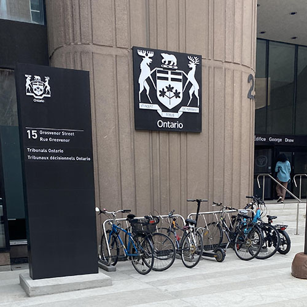
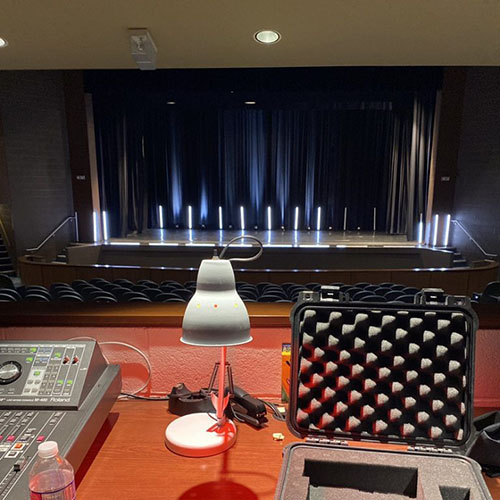

Project 1
Coordinated multiple large scale data management projects using Excel and VBA to ensure case information was up-to-date and accurately recorded Worked with colleagues to assist in projects where necessary ( incl. case management, document assistance) Directed correspondence from the Registrar's inbox to applicable staff members

Project 2
Worked directly with clients to understand their specific needs and produce events to their standards, responsible for controlling access to the theatre, locking and unlocking when necessary, in coordination with facilities management, and directed junior team members and assigned event positions